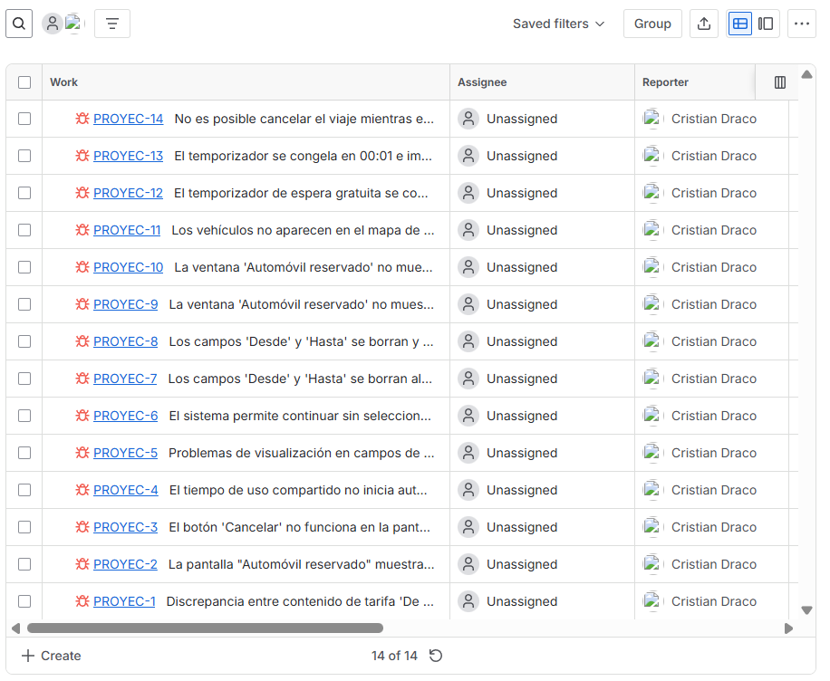
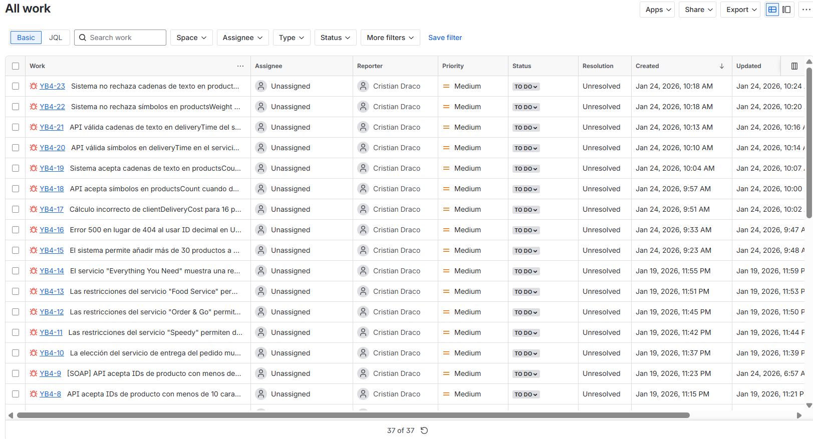
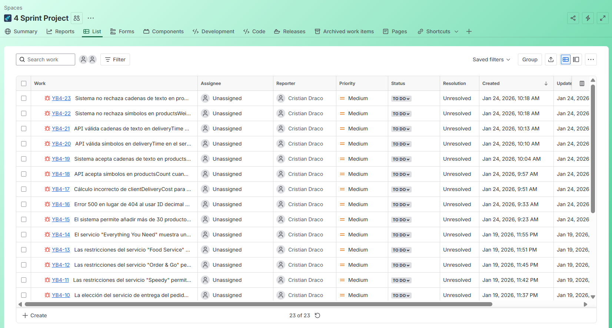

About Me
Curious and detail-oriented QA Engineer with hands-on experience in manual testing, API testing, UI validation, bug tracking, and test automation.
Through real-world QA projects at TripleTen, I’ve worked on web, mobile, backend, and automated testing workflows using tools such as Selenium WebDriver, Pytest, Postman, Jira, GitHub, PostgreSQL, Cygwin, and Chrome DevTools.
I’m especially interested in automation, AI-driven technologies, and modern software quality engineering.
Technical Skills
Testing
- Manual Testing
- UI Testing
- API Testing
- Regression Testing
- Smoke Testing
- Exploratory Testing
- Test Automation
Tools & Tech
- Selenium WebDriver
- Pytest
- Postman
- Jira
- Git & GitHub
- Chrome DevTools
- Figma
Other
- Python
- SQL / PostgreSQL
- REST APIs
- Bug Tracking
- Requirements Analysis
- HTTP / JSON
- Agile / Scrum
QA Projects
Urban Routes – Web Application Testing | TripleTen (2026)
Link: https://docs.google.com/document/d/1xe4F9bgb7oNZYYkwJ4RnfXkxfdaStmKE/edit
Jira Bug Report

Tools: Jira · Google Sheets · Draw.io · Figma
Urban Routes – Cross-Platform UI Testing | TripleTen (2026)
Link: https://docs.google.com/document/d/1oVlImqQCw4CnuELtPXHEzPPa_2dBMUwQ/edit
Jira Bug Report

Tools: Figma · Jira · DevTools
Urban Grocers – API Testing
Link: https: https://docs.google.com/spreadsheets/d/1oSlaGhWHpDgPZGih4TLZJiQfMGxwckV_JspttBR_UVI
Jira Bug Report

Tools: Postman · ApiDoc · Jira · REST APIs
Log Analysis & SQL Testing | TripleTen (2026)
Mar 2026 – Mar 2026
- Analyzed server logs using Cygwin command-line tools.
- Filtered and categorized HTTP error logs (400, 500).
- Executed SQL queries with JOIN, GROUP BY, HAVING, and CASE.
- Validated backend data and investigated system issues.
Achievement:
Strengthened backend debugging and database validation skills through log analysis and SQL testing.
Link: https://docs.google.com/document/d/1cvUJMS7VGNB8_b5jwr3LGHis8ABUhXCK
Tools: SQL · Databases · Cygwin · CLI · Log Analysis
API Test Automation – Urban Grocers | TripleTen (2026)
Mar 2026 – Mar 2026
- Automated API tests for product kit creation workflows.
- Created automated scenarios for invalid inputs and boundary values.
- Validated API responses, status codes, and response body fields.
- Managed project structure using Python and Pytest.
- Executed automated tests locally and versioned the project using GitHub.
Achievement:
Improved API reliability through automated validation of product kit creation and response handling.
Link: https://github.com/cristian-draco/qa-project-Urban-Grocers-app-es
Tools: Git · GitHub · Python · API Testing · Automation · Pytest
Automated Taxi Order Testing – Urban Routes | TripleTen (2026)
Apr 2026 – Apr 2026
Developed automated end-to-end tests for the Urban Routes web application using Python, Selenium WebDriver 4.41.0, Pytest, and the Page Object Model (POM) architecture.
- Automated the complete taxi ordering workflow.
- Implemented reusable locators and methods using POM structure.
- Validated payment methods, modal interactions, and dynamic UI behaviors.
- Handled asynchronous driver assignment flows and confirmation validations.
Link: https://github.com/cristian-draco/qa-project-Urban-Routes-es.git
Tools: Python · Selenium WebDriver · Pytest · Test Automation · POM
Urban Routes Web, Mobile & API Testing | TripleTen (2026)
Apr 2026 – May 2026
Performed comprehensive manual testing for web, mobile, and backend applications within a complete QA workflow simulation.
- Designed test cases, checklists, and validation scenarios.
- Executed UI, usability, exploratory, and regression testing.
- Validated mobile responsiveness and workflow consistency.
- Tested REST APIs using backend requirements and API documentation.
- Verified requests, responses, status codes, and error handling.
Link: https://docs.google.com/document/d/1eWtUkHWPdIegnvJZZJoScLJOvTAMNhwD
Tools: Manual Testing · API Testing · REST APIs · Functional Testing · Exploratory Testing
Experience
Previous experience working in fast-paced and customer-focused environments helped me develop strong communication, adaptability, attention to detail, teamwork, and problem-solving skills.
These experiences also strengthened my ability to follow structured processes, work under pressure, manage responsibilities consistently, and communicate effectively within teams skills that now translate naturally into QA and software testing.
Currently
Improving my skills in Selenium WebDriver, Pytest, automation frameworks, AI automation workflows, and modern QA engineering practices.
Contact
📧 cristiandracogaviria@gmail.com
📍 Popayán, Colombia